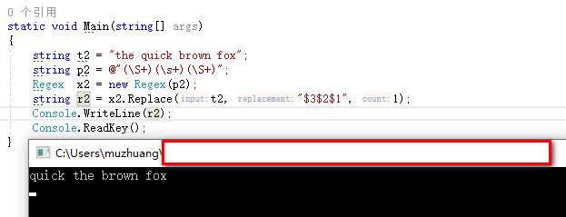

为了能够更好地理解如何在C#环境中使用正则表达式，这里整理了一些常用的正则表达式：
罗马数字：
string p1 = "^m*(d?c{0,3}|c[dm])" + "(l?x{0,3}|x[lc])(v?i{0,3}|i[vx])$";
string t1 = "v";
Match m1 = Regex.Match(t1, p1);交换前两个单词位置：
string t2 = "the quick brown fox";
string p2 = @"(\S+)(\s+)(\S+)";
Regex x2 = new Regex(p2);
string r2 = x2.Replace(t2, "$3$2$1", 1);
关健字=值：
string t3 = "myval = 3";
string p3 = @"(\w+)\s*=\s*(.*)\s*$";
Match m3 = Regex.Match(t3, p3);实现每行80个字符：
string t4 = "********************"
+ "******************************"
+ "******************************";
string p4 = ".{80,}";
Match m4 = Regex.Match(t4, p4);月/日/年 小时:分:秒的时间格式：
string t5 = "01/01/01 16:10:01";
string p5 = @"(\d+)/(\d+)/(\d+) (\d+):(\d+):(\d+)";
Match m5 = Regex.Match(t5, p5);改变目录（仅适用于Windows平台）：
string t6 = @"C:\Documents and Settings\user1\Desktop\";
string r6 = Regex.Replace(t6,@"\\user1\\", @"\\user2\\");扩展16位转义符：
string t7 = "%41"; // capital A
string p7 = "%([0-9A-Fa-f][0-9A-Fa-f])";
string r7 = Regex.Replace(t7, p7, HexConvert);删除C语言中的注释（有待完善）：
string t8 = @"
/*
* 传统风格的注释
*/
";
string p8 = @"
/\* # 匹配注释开始的定界符
.*? # 匹配注释
\*/ # 匹配注释结束定界符
";
string r8 = Regex.Replace(t8, p8, "", "xs");删除字符串中开始和结束处的空格：
string t9a = " leading";
string p9a = @"^\s+";
string r9a = Regex.Replace(t9a, p9a, "");
string t9b = "trailing ";
string p9b = @"\s+$";
string r9b = Regex.Replace(t9b, p9b, "");在字符\后添加字符n，使之成为真正的新行：
string t10 = @"\ntest\n";
string r10 = Regex.Replace(t10, @"\\n", "\n");转换IP地址：
string t11 = "55.54.53.52";
string p11 = "^" +
@"([01]?\d\d|2[0-4]\d|25[0-5])\." +
@"([01]?\d\d|2[0-4]\d|25[0-5])\." +
@"([01]?\d\d|2[0-4]\d|25[0-5])\." +
@"([01]?\d\d|2[0-4]\d|25[0-5])" +
"$";
Match m11 = Regex.Match(t11, p11);删除文件名包含的路径：
string t12 = @"c:\file.txt";
string p12 = @"^.*\\";
string r12 = Regex.Replace(t12, p12, "");联接多行字符串中的行：
string t13 = @"this is
a split line";
string p13 = @"\s*\r?\n\s*";
string r13 = Regex.Replace(t13, p13, " ");提取字符串中的所有数字 ：
string t14 = @"
test 1
test 2.3
test 47
";
string p14 = @"(\d+\.?\d*|\.\d+)";
MatchCollection mc14 = Regex.Matches(t14, p14);找出所有的大写字母：
string t15 = "This IS a Test OF ALL Caps";
string p15 = @"(\b[^\Wa-z0-9_]+\b)";
MatchCollection mc15 = Regex.Matches(t15, p15);找出小写的单词：
string t16 = "This is A Test of lowercase";
string p16 = @"(\b[^\WA-Z0-9_]+\b)";
MatchCollection mc16 = Regex.Matches(t16, p16);找出第一个字母为大写的单词：
string t17 = "This is A Test of Initial Caps";
string p17 = @"(\b[^\Wa-z0-9_][^\WA-Z0-9_]*\b)";
MatchCollection mc17 = Regex.Matches(t17, p17);找出简单的HTML语言中的链接：
string t18 = @"
<html>
<a href=""first.htm"">first tag text</a>
<a href=""next.htm"">next tag text</a>
</html>
";
string p18 = @"<A[^>]*?HREF\s*=\s*[""']?" + @"([^'"" >]+?)[ '""]?>";
MatchCollection mc18 = Regex.Matches(t18, p18, "si");本文来自木庄网络博客> 开发中常用的正则表达式